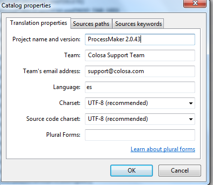
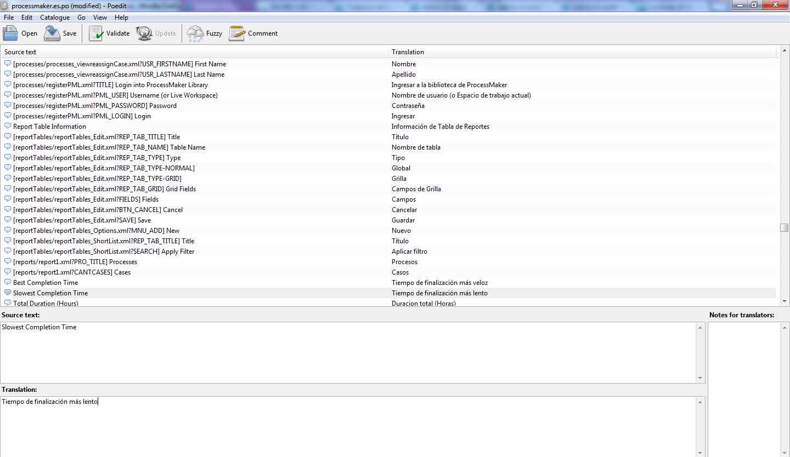
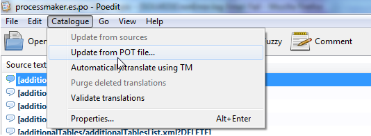
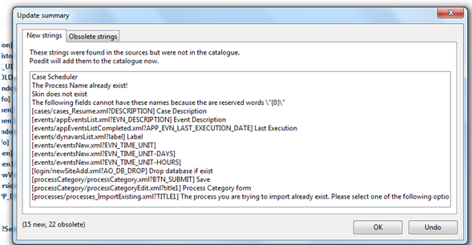
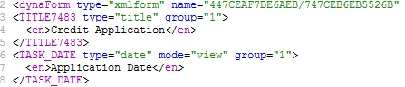
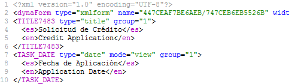
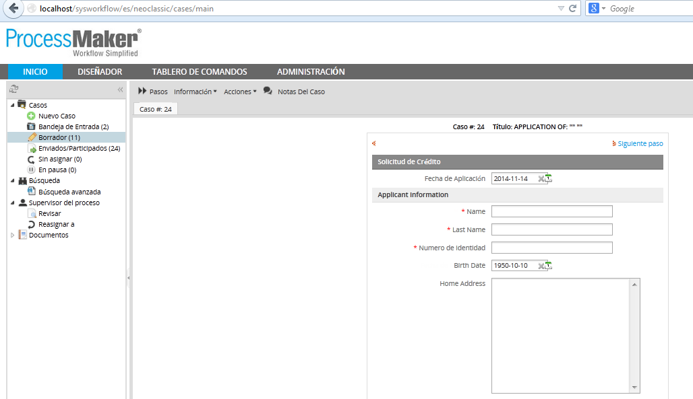

Introduction
Wouldn't it be great to have ProcessMaker completely translated to your mother-language? The ProcessMaker team is always on the look-out for new translations and for people who are willing to update the existing ones.
How to create your own translation file
ProcessMaker accepts .po files; basically it is possible to use any po program to create your translations, or a plain text editor such as Notepad++ or UltraEdit for Windows and vim or gedit for Linux. To check po file structure it is recommended to use PO Edit, remember that file has to be encoded on UTF-8 and also the plain text editor choose to be used has to be encoded with it.
Recommendations: Use poedit version 1.4.5 or previous to edit .po files, because from version 1.4.6 and later header X-Poedit-Language is not used anymore, it was replaced for Language header.
From version 2.5, a validation was added to accept both headers.
Translating with a plain text editor
a. You can download it either once ProcessMaker is installed or by downloading the version of the English translation file you want to create yours, as a recommendation English file must be used to create or update language since this file is the one with the latest labels and the default ProcessMaker language.
b. Then create a file on any plain text editor. Add a header, which can be copied from the original one, change it with the language of your file, for example if you are creating a Spanish language the header will be:
msgstr ""
"Project-Id-Version: ProcessMaker 2.0.44\n"
"POT-Creation-Date: \n"
"PO-Revision-Date: 2012-07-04 09:42:40\n"
"Last-Translator: \n"
"Language-Team: ProcessMaker Support Team <support@colosa.com>\n"
"MIME-Version: 1.0\n"
"Content-Type: text/plain; charset=utf-8\n"
"Content-Transfer_Encoding: 8bit\n"
"X-Poedit-Language: Spanish\n"
"X-Poedit-Country: \n"
"X-Poedit-SourceCharset: utf-8\n"
"Content-Transfer-Encoding: 8bit\n"
c. You can copy all the content of the original file and translate the msgstr strings
Then translate the msgstr strings:
# LABEL/ID_END_OF_PROCESS
#: LABEL/ID_END_OF_PROCESS
msgid "End of process"
msgstr "Fin de proceso"
# TRANSLATION
# LABEL/ID_TAREA_COLGANTE
#: LABEL/ID_TAREA_COLGANTE
msgid "Leaf task"
msgstr "tarea de hoja"
Do NOT change the string for the msgid because this is the id of the label. Make sure that each msgstr is enclosed in double quotes. To use a double quotation mark within a string, precede it with a backslash \" .
Using PO Editor
Download POedit and install it. Then open the file processmaker.en.po with PoEdit.
First edit the header information for the PO file. Go to Catalog > Setup:

Change the Language from English to your language and change the Country from USA to your country. Also add your name and address so people can contact you with revisions and updates about the translation. Set the character set to UTF-8.
PoEdit displays a list of phrases to translate at top. Select a phrase to translate. In the top box is displayed the original English phrase to translate and in the bottom box is displayed the translation. In the translation window, translate the phrase from English to your language.

Press the Tab key to switch between the list of phrases and the translation box for each phrase. It is also a good idea to show the translator comments window to see if there are any translator comments left by a previous translator. Activate the option under View > Show translator comments. Also show the window for automatic comments from the programmers by activating the option under View > Show automatic translator comments.
When translating, ignore any text inside square brackets, when translating. For instance, a Spanish translator would translate "[JAVASCRIPT/CANCEL] Cancel" as "Cancelar".
Phrases highlighted in yellow are marked as "fuzzy", which means that the original phrase in the software has changed, so the phrase needs to be retranslated. If you are unsure how to translate a phrase, it is better to leave it blank, rather than use a wrong translation. Another option is to do a preliminary translation of a phrase, but indicate that the phrase needs to be reviewed in the future by clicking the "fuzzy" icon in the toolbar. This will indicate to the next translator to review the translation. A comment can also be left for the next translator by going to Edit > Edit Comment.
Note: If using ProcessMaker version 1.6-4184 or earlier, marking a phrase as "fuzzy" causes an error when importing the PO file due to this bug.
When done, save the file as processmaker.<LANG>.po, where <LANG> is the 2 letter 639-1 ISO language code.
Adding a New Translation
To add a new existing translation, login into ProcessMaker as the admin user (or any other user with PM_SETUP_ADVANCE in their role) go to ADMIN > Settings > LANGUAGES and click on Install/Update, a window will open click on the folder icon to search the .po file on the local computer

At the next login, the language should be available for use.
Note: If using ProcessMaker version 1.6-4257 or later, please be aware of this bug which causes ProcessMaker to not recognized the language in the PO header. To fix this problem, edit the PO file manually with a bare text editor to remove the automatic comment added by PoEdit to the PO header.
Change the two lines:
#: %Y=Year, %m=Month, %d=Day"
To the single line:
Improving existing languages
ProcessMaker gives users the possibility to merge languages automatically, it means that if for some reason some ID's or new labels were added into the English language, ProcessMaker will synchronize them improving time users spent by editing any .po file automatically.
How can this be possible?. If a language needs to be updated, upload it into ProcessMaker and then Export it, when the language, which will be translated, is downloaded from ProcessMaker all new labels and new ID's will be added; however, they won't be translated into the language itself.
Recommendations while editing a language
- Both translations files must be correctly merged and ID's and msgid must be the same, otherwise some labels may not be displayed correctly when language will be uploaded in ProcessMaker.
- It is a good practice to translate language in small sections, save file and upload into ProcessMaker to check errors that may appear.
- When a language is uploaded in ProcessMaker, clear Browser and ProcessMaker cache to have changes correctly visualized.
Editing Translation Files
Follow the steps below to compare files and correct some possible errors that may appear:
1. Download the version of the English translation file you want to create yours, as a recommendation English file must be used to create or update language since this file is the one with the latest labels and the default ProcessMaker language. You can download it either once ProcessMaker is installed by going to ADMIN >Settings >Language, choose the English one and click on Import, or form the page: http://sourceforge.net/projects/processmaker/files/Translations/2.0/
a. Change the extension of the file downloaded from processmaker.en.po to processmaker.pot; .pot file are templates which are needed to compare between the original translation file with the new one to look for obsolete and new labels to be updated.
b. Open PO Edit editor and open the file to be translated, then go to the tool menu CATALOGUE> Update From POT File:

c. All labels from both files will be compared and as a result of that new and obsolete strings will display:

d. Open your translation file (using a plain text editor mentioned before) look for those strings on the translation file you are using and fix them, make sure to not save the file on the PO Edit Editor because of the characters used on the file will corrupt your file if it is not well configured. Change and add strings in to the file, once you finish, repeat option b. until the file doesn’t have any errors.
Translating Dynaform's labels
As it was mentioned in this documentation, it is not possible to design Multi-lingual processes, however labels of the DynaForms could be multi-lingual depending on the languages imported inside ProcessMaker.
For instance, if needed to have the DynaForm either in English or Spanish, just make sure you have the Spanish properly imported inside ProcessMaker.
Then go to the XML of the DynaForm, see that the label is enclosed inside the <en> </en> tags, this means it is using the English label.

To have the labels translated into Spanish, enclose the label, previously translated to Spanish, in <es></es> tags:

Using the English language the form will be:

Switching the language to Spanish, the DynaForm will have the labels translated.

Where do I send my translations?
If you would like to include your translation in ProcessMaker, please email the .po file as an attachment to communityATprocessmakerDOTcom with [processmaker.en.po] (change en for the corresponding language you are sending) as the first word in the subject line. If you would like your name to be listed on the translation credits page, please let us know in the email.
Thank you for your help with translations!